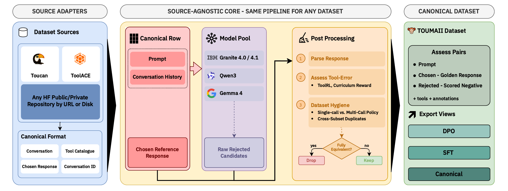
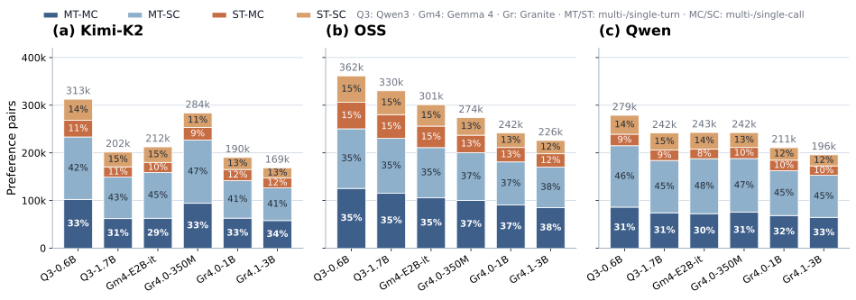

Large-scale preference data
4.52M pairs across four interaction categories, retaining conversation context, tool catalogues and reward annotations.
1TUM.ai2Technical University of Munich3Zuse School ELIZA4IBM Research
† Equal contribution
Converting tool-use demonstrations into reference-annotated preference pairs,
with naturally occurring model-generated deviations.

Reliable tool use is a fundamental capability of autonomous agents, but supervised demonstrations alone do not explicitly contrast a reference call with a plausible alternative. Tool-calling preference data, particularly for multi-turn interactions, remains scarce. We introduce TOUMAII, a dataset of 4,515,503 retained preference pairs derived from quality-filtered Toucan conversations, covering single- and multi-turn interactions with sequential and parallel function calls. We also release TOUMAII-Gen, a source-agnostic pipeline that pairs source references with naturally occurring model-generated responses and annotates their agreement with the reference. Applying the same pipeline to ToolACE produces TOUMAII-ACE, with an additional 100,846 pairs. A controlled fine-tuning comparison on Granite-4.1-3B demonstrates competitive downstream performance against ToolRM training data on BFCL v4.
4.52M pairs across four interaction categories, retaining conversation context, tool catalogues and reward annotations.
A shared canonical representation separates dataset-specific adapters from generation, annotation and export.
Original distribution figures, explicit filtering rules and a fixed-protocol downstream comparison.
retained preference pairs
generator models, 3 families
interaction categories
source datasets demonstrated
A shared response-level representation preserves source references while making generation and annotation independent of dataset formatting.
For a target assistant turn t, a source adapter provides the conversation identifier, preceding history ht−1, tool catalogue T and reference response C. A generator samples an alternative response R from the same history and catalogue; non-identical candidates are assessed and post-processed.
The released Toucan-derived dataset uses six generators from three model families: Granite-4.0-350M, Granite-4.0-1B, Granite-4.1-3B, Qwen3-0.6B, Qwen3-1.7B and Gemma-4-E2B-it. Thinking is disabled throughout generation.
Following ToolRL, format and correctness terms score function names and argument key–value pairs against the reference. Their sum is min–max normalised from [−3, 4] to [0, 1]. A separate weighted score exposes format, soft/strict name and argument components.
Interpretation. These annotations quantify reference agreement; they do not establish execution success or semantic invalidity. A chosen call can be an intermediate step that is corrected later in a successful trajectory.
The paper removes reference-equivalent pairs, chosen responses with long free-text argument values (>30 words), rejected calls that match a later chosen turn, and cross-subset duplicates. This retains 46.8% of 9,648,704 candidates. The code exports canonical, DPO and SFT Parquet views alongside a run manifest; the documented cleaning stage is run separately.
Source-agnostic by design. Add a lightweight adapter to bring your own tool-calling SFT dataset.
Original pipeline figure ↗4,515,503 preference pairs derived from quality-filtered Toucan trajectories. Sequential and parallel calls, across single- and multi-turn interactions.
After reference-agreement filtering and de-duplication. Counts from the paper.

Applying the same pipeline to ToolACE yields 100,846 additional preference pairs, demonstrating source transfer beyond Toucan.
Four appendix examples illustrate argument-value deviations, incomplete call coverage, failure to incorporate feedback and failure to invoke an available tool.
Examples are abridged from the paper; function-name prefixes are omitted in the weather examples. Rewards measure agreement with the reference, not execution success.
Granite-4.1-3B fine-tuned with equally weighted DPO and SFT losses. BFCL v4 results summarise four non-overlapping data slices at a fixed training seed.
TOUMAII and ToolRM are converted to the same prompt–chosen–rejected format with the Granite chat template. Examples exceeding 2,048 tokens are dropped rather than truncated. Each corpus is shuffled with seed 42 and divided into four non-overlapping slices of at most 50,000 pairs. Each run starts a new LoRA adapter from the same base checkpoint and trains for one epoch; architecture, optimisation, training budget, checkpoint schedule and evaluation are held constant.
± 0.17 across four data slices
| Metric | Base | + ToolRM | + TOUMAII |
|---|---|---|---|
| Overall | 37.76 | 36.05 ± 0.43 | 37.01 ± 0.49 |
| Live | 76.54 | 75.20 ± 0.10 | 77.55 ± 0.17 |
| Non-live AST | 87.04 | 86.30 ± 0.16 | 86.81 ± 0.17 |
| Multi-turn | 23.00 | 21.03 ± 0.70 | 21.19 ± 0.56 |
| Memory | 33.55 | 28.33 ± 1.33 | 34.68 ± 1.12 |
TOUMAII improves live and memory accuracy over the base model; overall and multi-turn accuracy remain below the base. Reported ± values are sample standard deviations across data slices.
Reward annotations measure agreement with reference tool calls, rather than execution-level or semantic correctness. Some alternatives may be valid, and references can contain intermediate errors corrected later in the trajectory. TOUMAII currently contains no irrelevance samples, and thinking was disabled during generation. Source and generator limitations carry into the released data.
Use the released data, generate preference pairs from a supported source, or adapt the pipeline to your own tool-use demonstrations.
If you use TOUMAII or TOUMAII-Gen in your research, please cite the accompanying manuscript.
@misc{poetzsch2026toumaii,
title = {{TOUMAII}: A 4.5M-Pair Tool-Calling Preference Dataset
and Its Source-Agnostic Generator},
author = {Pötzsch, Moritz and Gentilini, Andrea and
Rossgoderer, Lisa and Osterfeld, Tom and
Sanjivi Arul, Kesava Prasad and Kadhe, Swanand Ravindra},
year = {2026},
howpublished = {Research manuscript},
url = {https://github.com/tum-ai/toumaii-gen}
}Background and source datasets cited in the manuscript.